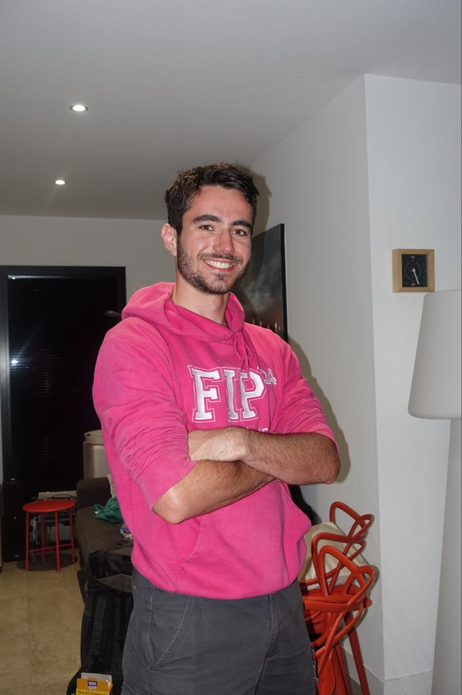

Portfolio
Arthur Maquin
Développeur logiciel backend.

En ce moment
Projets
-
Développement d'une application d'analyse des marchés financiers
Dans un monde qui évolue rapidement, il devient compliqué d'obtenir toute l'actualité et d'être informé rapidement. Le but de ce projet est de recueillir les articles de presse, le cours de la bourse et d'analyser le biais du marché, afin de synthétiser les informations pour comprendre les variations du marché et, en cas de contradiction entre le marché et mes convictions, de réagir rapidement. Le projet permet également d'améliorer significativement la qualité de la réponse du bot via une analyse mathématique supplémentaire.
-
Création d'un jeu vidéo (en cours)
Dans le monde du logiciel, la puissance de calcul disponible ne cesse d’augmenter, ce qui devrait nous permettre de concevoir des applications toujours plus rapides et performantes.
Pourtant, dans le même temps, nous constatons souvent une augmentation de la complexité et de la lourdeur des applications, ainsi qu’une moindre attention portée à l’efficacité des algorithmes et à l’optimisation. Le manque de tests de performance et de charge contribue également à laisser ces problèmes apparaître tardivement. C'est ce que résume la loi de Wirth : le logiciel ralentit plus vite que le matériel n'accélère.
Ce projet de création de jeu vidéo est pour moi une façon de créer un univers qui me plait, mais aussi de prouver que l'on peut concevoir des applications qui ne nécessitent pas un matériel dernier cri.
-
Paint Neo (en cours)
Étant un fan de la simplicité de paint 3D, je souhaite recoder l'application tout en apportant toutes les fonctionnalités qui manquaient à mes besoins.
Le projet est principalement destiné à Linux.
Formation
Parcours
-
2021 – 2024
Diplôme d’ingénieur en Informatique, Réseaux et Télécommunications
Spécialité : capteurs radar et télécommunications
IMT Atlantique de Brest
Sur ces 3 années les plus formateurs, j'ai étudié sur tous les aspects de l'Informatique. Depuis la couche électronique, de la logique très bas niveau jusqu'au développement logiciel très haut niveau, j'ai appris à prendre du recul sur le fonctionnement et le temps de réponse de nos applications. Les limitations matérielles lié au CPU réduisent fortement certaines applications dans le calcul massif et, dans le cadre d'applications en temps réel comme les capteurs embarqués, l'optimisation des algorithmes, l'accélération matérielle et l'utilisation de propriétés mathématiques comme le "compressive sensing" permettent de dépasser les débits de données à traiter.
-
2023 – 2024
Master I-MARS
Double diplôme orienté sur la recherche en systèmes télécoms
INSA Rennes / Institut Mines Télécoms
En dernière année d'école d'ingénieur, j'ai travaillé en collaboration avec des enseignants chercheurs sur les méthodes utilisées pour la détection du pattern de fréquences utilisées par l'éméteur. Le cursus implique des connaissances en télécommunications, mathématiques, électronique demande une rigueur quant à la recherche de l'information.
-
2019 – 2021
Diplôme Universitaire de Technologie Réseaux et Télécommunications
IUT La Rochelle
Pendant 2 ans, j'ai appris les bases des mathématiques appliquées au traitement du signal, les méthodes pour configurer les réseaux, les bases de l'électronique et de la programmation.